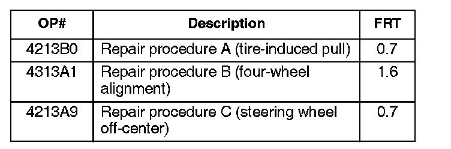
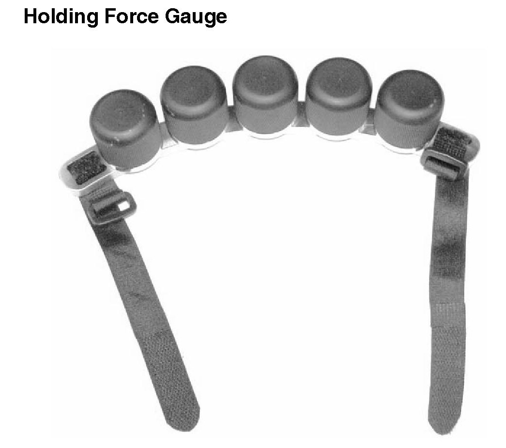
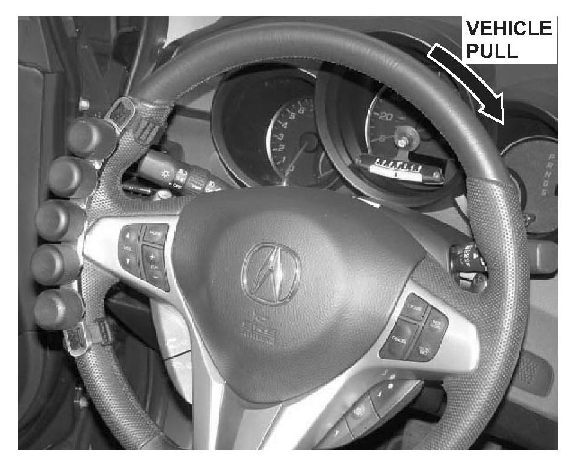
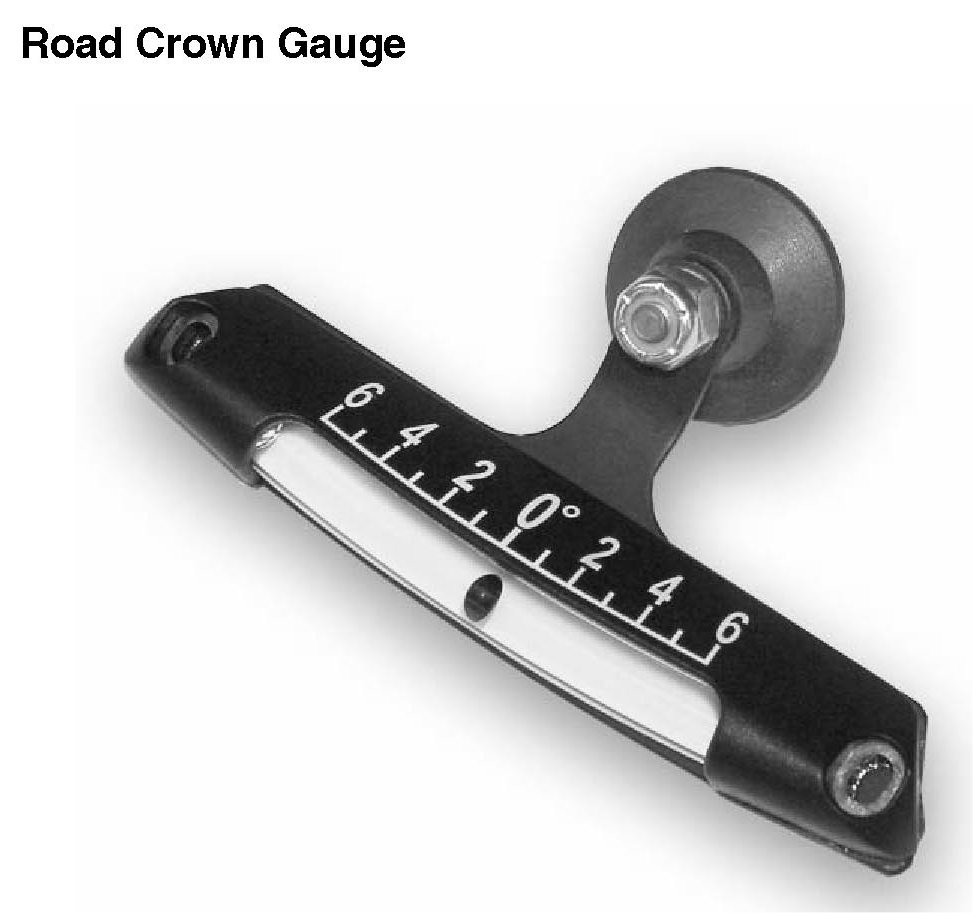
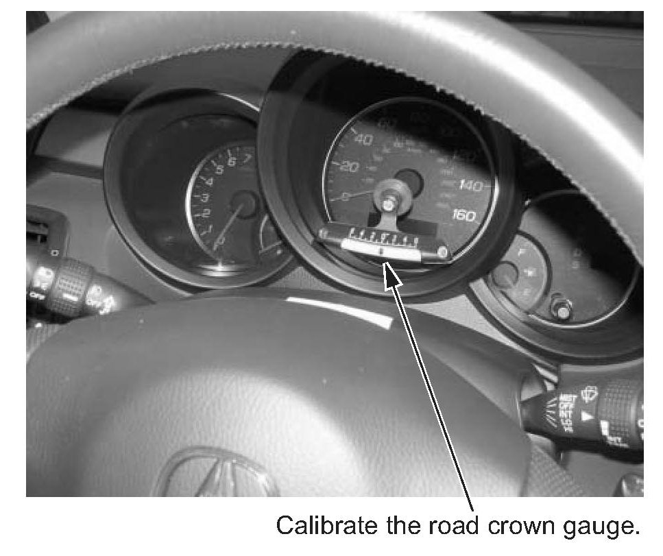
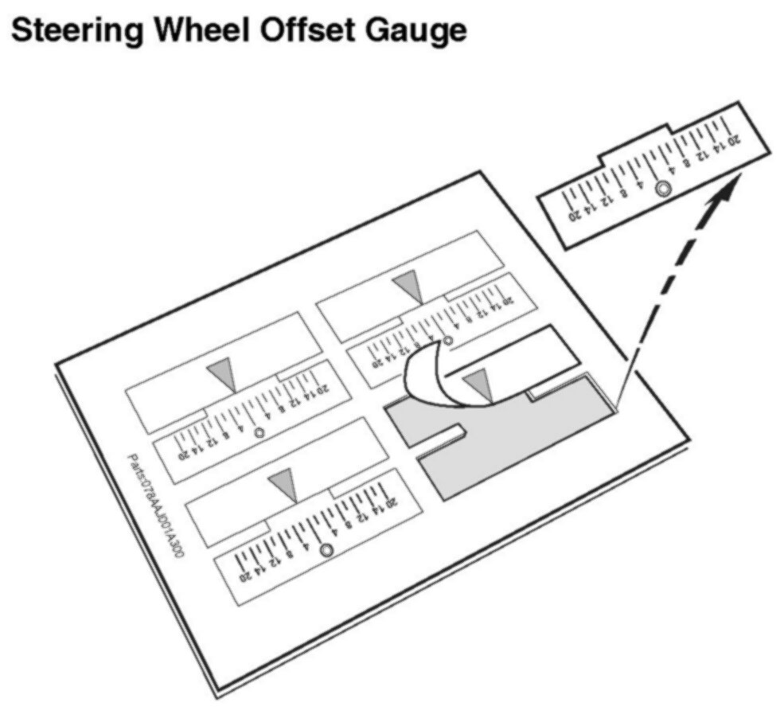
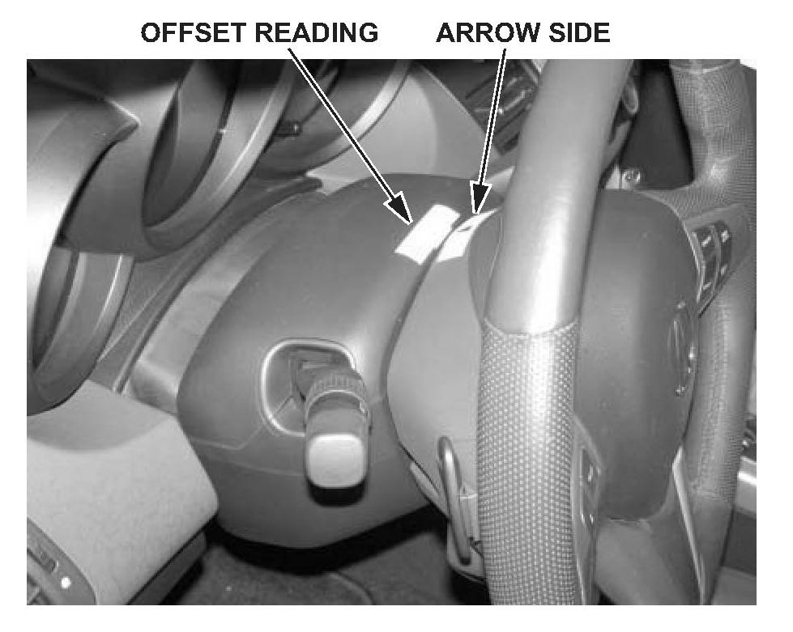
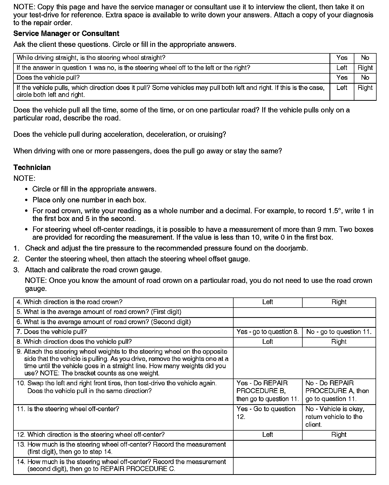

Steering - Vehicle Pulls Left or Right: Overview
06-039October 7, 2006
Applies To:
ALL 1999-07 Models
Vehicle Pulling or Drifting
SYMPTOM
While driving on a straight road, the vehicle pulls or drifts to the right or the left.
BACKGROUND
New tools were developed to help you diagnose and correct a pulling and/or steering wheel off-center issue. There is a diagnosis worksheet included to take on your test-drive and record your findings. These values are used to build the 15-digit DTC (diagnostic trouble code) that is required for your warranty claim. The last step in each repair procedure helps you create the correct code.
In the rare case that you have to repair a vehicle that pulls and has the steering wheel off-center, use REPAIR PROCEDURE B to file your warranty claim.
PROBABLE CAUSES
Several conditions can cause the vehicle to pull or drift:
^ Wheel alignment
^ Tires
^ Steering wheel off-center (no pulling or drifting, but a client may believe this is the case)
CORRECTIVE ACTION
Diagnose the problem using the special tools and the worksheet on page 4 that guides you to one of three repair procedures.
TOOL INFORMATION
Centering Tape (enough
to diagnose 240 vehicles): T/N 07AAJ-001A300
Steering Drift Set Level: T/N 07AAJ-001A200
Steering Drift Set: T/N 07AAJ-001A140
Replacement Weight
for Steering Drift Set: TIN 07AAJ-001A400
WARRANTY CLAIM INFORMATION

In warranty:
The normal warranty applies.
Failed Part: P/N 53560-SDA-A01
Defect Code: 07406
Symptom Code: 03602
Skill Level: Repair Technician
Diagnostic To create the 15-digit DTC, see
Trouble Code: the applicable repair procedure.
Out of warranty:
Any repair performed after warranty expiration may be eligible for goodwill consideration by the District Parts and Service Manager or your Zone Office. You must request consideration, and get a decision, before starting work.
TOOL INFORMATION

Holding Force Gauge
The holding force gauge measures the amount of the pull on the vehicle. It is a bracket that counts as one weight, plus five removable weights.

During the test-drive, attach the bracket and the weights to the steering wheel on the side opposite the pulling direction. For example, if the vehicle pulls to the right, attach the bracket and weights to the left side of the steering wheel. Start with the maximum amount of weight on the steering wheel, and remove the weights until the vehicle drives in a straight line.
When recording the pull on the worksheet, write down the direction of the pull (left or right) and the number of weights required to balance the pull (one through six). For example, you have the bracket and two weights on the steering wheel. Record this as three weights.

Road Crown Gauge
The road crown gauge measures the amount of road crown. Almost all roads have a crown to help drain water during rainstorms. Use the suction cup to attach the road crown gauge to the vehicle in a vertical position. If necessary, bend the bracket until the gauge is vertical. Once you attach and align the road crown gauge, calibrate the gauge to zero. There are two ways to calibrate the gauge:
^ Park the vehicle on a level surface, like an alignment rack, and calibrate the gauge by moving the gauge until the ball is on the zero mark.
^ If you do not have a perfectly flat surface, park the vehicle on a reasonably flat surface and note the gauge reading. Turn the vehicle 1800 and, with the tires in the same spot, note the new gauge reading. Then move the gauge half of the difference. Example: Your first reading is +3 and after moving the vehicle, the gauge reads -1. The difference is 4 degrees. Position the gauge to read +1.

NOTE:
You must calibrate the gauge with the same weight in the vehicle that you will use for the test-drive. If you plan to have an assistant help you during the test-drive, calibrate the gauge while both of you are sitting in the vehicle.

Steering Wheel Offset Gauge

The steering wheel offset gauge is a sticker that attaches to the steering wheel and the steering column cover. Place the sticker on the steering wheel when the steering wheel is straight. When you test-drive the vehicle, you can read how many millimeters the steering wheel is off-center.
NOTE:
If the vehicle is pulling, repairing the pull may correct the steering wheel offset.

DIAGNOSIS WORKSHEET

Disclaimer